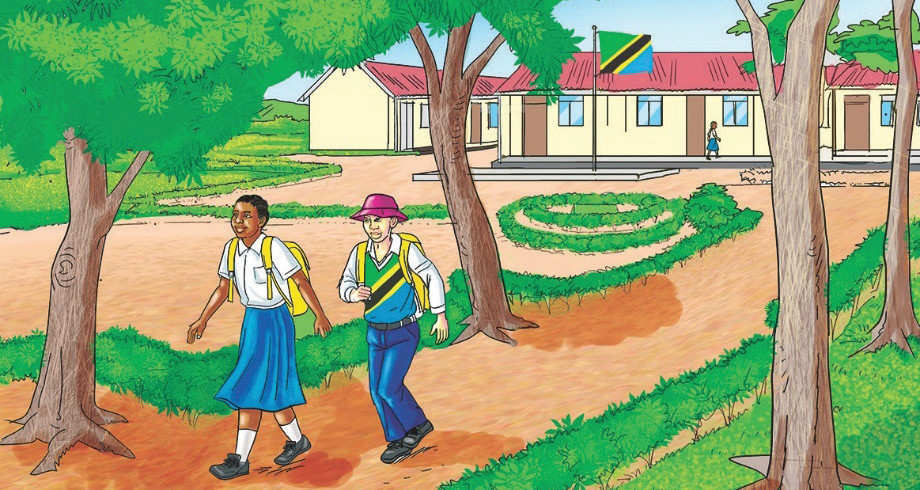

Usafi na usalama wa hewa
Chunguza Kielelezo namba 11, kisha soma mazungumzo kati ya Neema na Musa.

Kielelezo namba 11: Mazingira yaliyotunzwa vizuri
Chunguza Kielelezo namba 11, kisha soma mazungumzo kati ya Neema na Musa.
